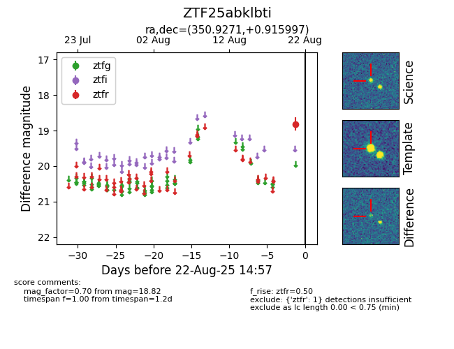

Target ZTF25abklbti at 2025-08-22 15:51, see:
FINK: fink-portal.org/ZTF25abklbti
Lasair: lasair-ztf.lsst.ac.uk/objects/ZTF25abklbti
ALeRCE: alerce.online/object/ZTF25abklbti
alt names
ZTF25abklbti (ztf,alerce)
coordinates:
equatorial (ra, dec) = (350.9271,+0.91600)
galactic (l, b) = (82.4244,-54.90304)
photometry
last ztfr=18.82
1 ztfr detections
